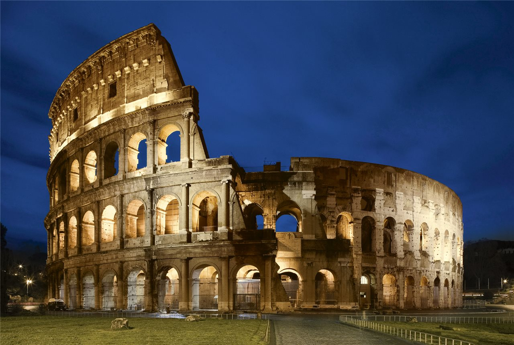
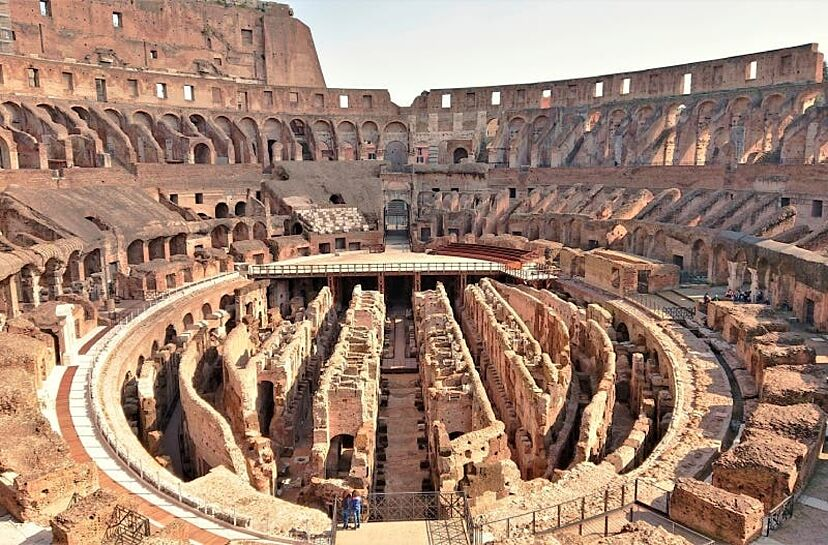
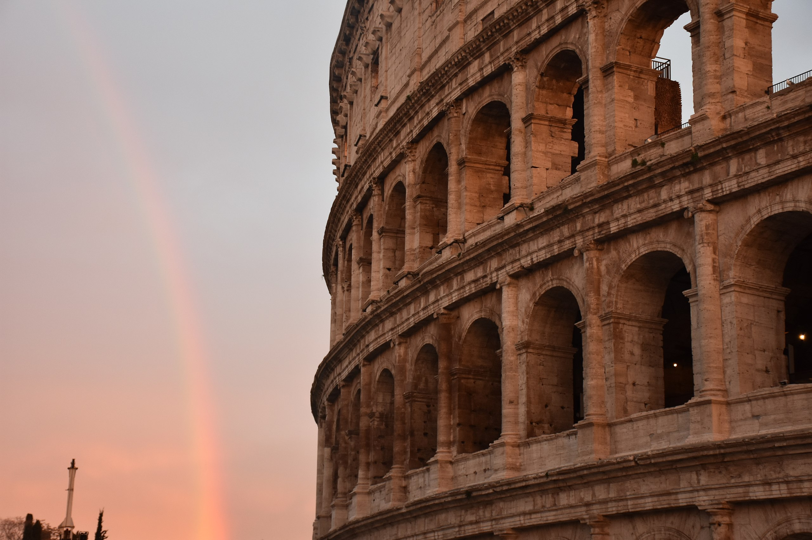
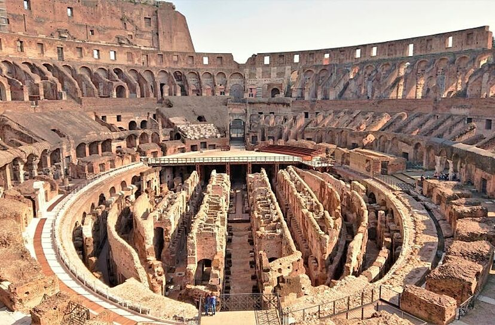
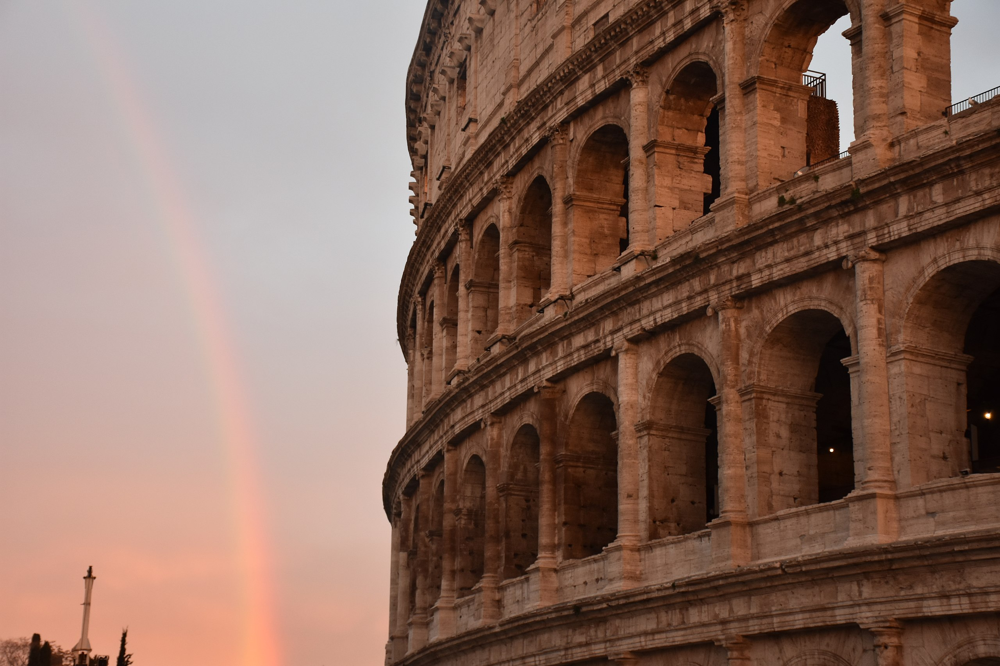

Coliseo Romano
El Coliseo es un anfiteatro de la época del Imperio romano, situado en el centro de la ciudad de Roma.
Detalles
El Coliseo es un anfiteatro de la época del Imperio romano, situado en el centro de la ciudad de Roma. Es una de las estructuras más grandes construidas por los romanos y es un símbolo del ingenio y la ingeniería romana. l Coliseo fue construido para albergar espectáculos públicos, como combates de gladiadores, recreaciones de batallas históricas, caza de animales salvajes, ejecuciones y dramas basados en la mitología romana. Tenía una capacidad para albergar entre 50,000 y 80,000 espectadores.
Datos Curiosos:
- El Coliseo podía albergar entre 50,000 y 80,000 espectadores.
- El Coliseo es un símbolo duradero del Imperio Romano y de la ciudad de Roma. Es uno de los sitios turísticos más visitados del mundo y ha sido objeto de numerosas representaciones en la cultura popular, incluyendo películas, libros, y obras de arte.
- Originalmente, se llamó Anfiteatro Flavio, en honor a la dinastía Flavia de emperadores que lo construyó.
Galería de Imágenes:
 


